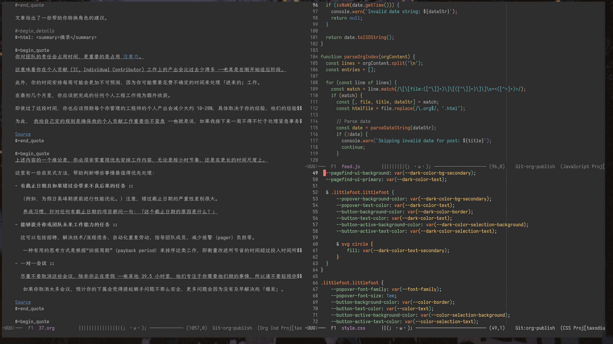

Zine#37

上周将编辑器字体更换成 Iosevka 和 霞鹜文楷，整体看起来挺舒服的，无论是写博客还是写代码。
如果你觉得好看可以尝试一下 (≖ᴗ≖๑)
News | Article
Why developers should write blog posts (talk)
作者分享为什么你应该开始写博客，网站里还链接了很多关于博客的文章。
“A year from now, you will wish you had started today.” ⸺ Karen Lamb
「一年后，你会希望自己今天就开始。」 ⸺ Karen Lamb
如果你还没拥有博客，不如现在就试试吧！
提升沟通能力可以对你的职业生涯产生重大影响。
[…]
有很多方法可以提升你的沟通能力。
写个人博客就是一个很好的方式，因为你可以完全掌控沟通的内容、时间和方式。
你在个人博客上投入的所有努力都会以多种方式带来回报，而不仅限于你当前的工作。
Fool yourself into writing
很喜欢的一篇文章，文章强调重复阅读和编辑自己写的内容，而不必勉强自己一鼓作气地写完。
通过编辑，做一些小改动，可以让自己热身起来，从而开始写一些新的内容。
有时候，进行写作的实际动作会很困难。
这不是写作障碍，而是一种对辛苦工作的自然抗拒。
有时你只是感到懒惰或缺乏灵感。
Murray 建议你要克服这种迟钝 ⸺ 不要等待灵感降临。
启动写作的最好方法之一是通过反复阅读和编辑「欺骗自己」去写作。
对你已经写好的内容做一些小的调整，可以作为一个很好的热身，让笔（或键盘）开始写新的内容。
即使你没有产出大量优质的新材料，你仍然是高效的。
摘录
在他的著作 The Curmudgeon’s Guide To Getting Ahead 中，作者 Charles Murray 就写作和思考提供了一些很好的建议。
他针对你已经知道想表达什么和在即兴思考时的写作，给出了一些技巧。
许多写作书籍强调在不回读或编辑的情况下，凭借原始的创造力冲刺完成草稿。
Murray 的方法则与此相反。
他建议在整个写作过程中不断回读和编辑。
多年来，我发现重读和轻度编辑是启动创作过程最可靠的方法。
然而，我始终无法摆脱那种传统观念的唠叨声：「别编辑太多，先写吧。」
对于喜欢反复琢磨的写作者来说，Murray 的建议或许正是你放松心情、享受写作过程所需要的许可。
对自己作品保持一定程度的迷恋，有助于写出好文章。
Murray 建议在整个写作过程中不断重读。
不要苛刻地审视，而是「滑过」文本，看看它的流畅度。
如果有想修正的地方，就直接修正。
允许自己在这里那里修改一个词。
随意调整句子顺序。
润色段落。
激发灵感，玩味想法。
享受写作的乐趣。
需要时不要害怕删减。
享受你写作时的声音。
删掉任何听起来不像你声音的内容，即使它很精彩。
保持真实很重要。
有时候，进行写作的实际动作会很困难。
这不是写作障碍，而是一种对辛苦工作的自然抗拒。
有时你只是感到懒惰或缺乏灵感。
Murray 建议你要克服这种迟钝 ⸺ 不要等待灵感降临。
启动写作的最好方法之一是通过反复阅读和编辑「欺骗自己」去写作。
对你已经写好的内容做一些小的调整，可以作为一个很好的热身，让笔（或键盘）开始写新的内容。
即使你没有产出大量优质的新材料，你仍然是高效的。
这不是一份完整的编辑指南，而是一个在起草过程中进行小幅修改的简短准则。
- 调整句子顺序
通读一段内容，重新排列句子以正确表达意思。
如果使用文本编辑器，每行写一句话 会非常方便。
- 精简冗长的句子
你经常会遇到让人听着不舒服且似乎不通顺的句子。
很可能是该句试图表达的信息过多，导致难以承载。
考虑将其拆分或简化。
- 确保段落之间的衔接流畅
- 检查段落的最后一句，确保它能顺畅地过渡到下一段。
写完并编辑好一篇文章后，你可能会厌倦再看它。
你最想做的就是把它发给编辑（或你的批评小组），然后开始做下一件事。
要避免这种诱惑。
Murray 建议让草稿放一晚冷静一下。
短暂休息后再回来，你肯定会发现一些大大小小的问题，并当场修正。
极简网站的理念
作者推崇一种极简主义：
我个人所认为的，极简网站不只是前端页面看着简洁，还要在资源加载方面同样保持极简。
作者大概也受到一些 This is a motherfucking website. 的影响，我也是，所以我也追求博客的简洁性。
不过我的追求没有作者那么高，我没有对资源压缩得很极致，也没有太细究页面上加载了多少资源，但资源应该也不会很多，也就一些字体，CSS 和几个辅助的 JS。
我的想法是渐进式增强，首先保证 HTML 的完整，然后用 CSS 让页面美观一些，再用一些 JS 增强页面的交互，例如明暗主题切换、代码复制、旁注、脚注。
除此之外，有时看到一些关于无障碍的实践，我也会尝试一下，例如设置合适的对比度、明暗主题、容易辨识的字体、字体大小、方便的 tab 操作。
如果你对我博客的改造感兴趣，可以移步 CHANGELOG。
博客是我的自由空间，可以随意的折腾，简单一点也好，复杂一点也好，我都乐在其中。
BTW，作者文章里还有很多关于极简理念的网站，感兴趣可以翻翻看。
Reinvent the Wheel
很多人会说，不要重复造轮子，但作者不同意这样的说法，他认为重复造轮子有助于加深对知识的理解，行动多少都会带来一些收获。
摘录
「不要重新发明轮子」是最有害的建议之一。
这个建议通常出于好意，但通常由两类人提出：
- 那些尝试自己发明轮子并且知道这有多难的人
- 那些从未尝试发明轮子却盲目遵循这一建议的人
无论哪种情况，这两种立场都会导致一种抑制好奇心和探索精神的氛围。
我很庆幸有些人没有遵循那个建议 ⸺ 我们欠他们现代生活中的许多便利。
要真正从根本上理解某样东西，你必须先能够实现一个简易版本。
它好不好用无所谓；以后你可以把它扔掉。
例如，在计算机科学中，有许多概念通常被认为是普通人难以掌握的：协议、密码学和网络服务器就是例子。
更多人应该了解这些东西是如何运作的。
因此，我认为人们不应该害怕重新创建它们。
基本的东西常常被视为理所当然。
例如，字符串或路径在编程中是非常复杂的概念。
如果你对它们的工作原理感兴趣，自己实现一个字符串或路径库是一个很好的练习。
即使最终没有人使用你的作品，我敢打赌你会学到很多东西。
[…]
深入钻研某个领域本身就很有趣，但还有一个额外的好处：这是成为更优秀工程师的少数途径之一 ⸺ 但前提是你不能在实现出一个可用版本之前放弃。
如果你频繁在项目之间跳来跳去，你将一无所获。
重新发明轮子有很好的理由：
- 打造一个更好的轮子（根据某种“更好”的定义）
- 了解轮子的制造过程
- 教别人关于轮子的知识
- 了解轮子的发明者
- 能够更换轮子或在轮子坏了时修理它们
- 在过程中学习制造轮子所需的工具
- 了解构建更大系统（例如车辆）的一小部分含义
- 帮助需要特殊轮子的人。
当然，不要忽视他人的成果 ⸺ 学习他们的工作，并在合适的时候加以利用。
不要因为不信任或不了解他人的工作而重复造轮子。
另一方面，如果你从未尝试将自己的知识付诸实践，又如何能深入了解你的领域并推动其发展呢？
我发现通过做小实验可以非常快速地前进。
尤其是在软件工程中，构建小型原型既便宜又快速。
解决你自己的问题，从小处开始，保持简单，反复迭代。
所以，基于以上所有内容，我的建议是：
重新发明 (Reinvent) 以获得洞察。
重复使用 (Resue) 以产生影响。
Spaced Repetition Systems Have Gotten Way Better

我想你或多或少都听过遗忘曲线 ⸺ 一个刚接触的知识，随着时间越久，遗忘得就越多。
所以就有人提出，在适当的时间进行重复记忆，减少遗忘，这种方法一般叫「间隔重复回顾」(Spaced repetition recap)。
「间隔重复回顾」的大致逻辑是：
- 如果一个知识点答对了，就会间隔几天后再出现，连续答对的次数越多，间隔时间就越长。
- 如果一个知识点答错了，则第二天会再次出现。
这个方法的间隔时间是固定的，如在第 1 天、第 6 天、第 \(2.5^{\text{times correct} + 1}\) 天重复1。
但不同知识点的遗忘时间是不同的，固定重复的时间对于一些知识点未必适合。
「间隔重复回顾」本质上是在遗忘到一定程度的时候进行重复记忆，从而加深记忆。
如何判断这个遗忘程度？
机器学习就很适合做这样的预测，而其中一种利用机器学习的方法是 FSRS (Free Spaced Repetition Scheduler) 。
让我们用机器学习来找到合适的复习间隔，而不是使用任意的公式 ⸺ 是 FSRS 的核心。
文章作者尝试了 FSRS 方法，和原来的重复方法对比，每天复习的卡片数量明显更少，所需时间更短，同时最终记忆的卡片数量更多。
主观上，我发现 FSRS 相比之前基于 SuperMemo-2 的 Anki 算法，极大提升了我的复习质量。
复习负担轻了很多。
错过一张卡片时的绝望感明显减少，因为这不再会让你回到第一天。
综合来看，FSRS 确实是一个更好的重复方法。
Experts have it easy
作者以走迷宫为例，展示了专家和新手之间的差异。
想起第一份工作的时候，也有一个新手同事。
他会问不少问题，比较依赖别人，所以我更多时候会先让他自己多尝试一下，还给了他一套《你不知道的 JavaScript》让他加深学习。
现在回想起来，我或许缺少了一些同情心和同理心，我有一定的经验，碰到一些问题会有大致的思路，但是他经验相对比较少，碰到问题他可能都不知道往什么方向研究，不清楚为什么要这样做。
或许我需要更加设身处地地去思考他碰到的困境，给他更多的引导，而不是仅仅让他多思考，多尝试。
能够教别人是一个难得的机会，可以加深自己对于某些内容的理解，也能锻炼引导别人的能力，了解到不同的看问题的角度。
仅仅指示资深员工回答新人的问题是不够的，因为绝大多数学习来自于初学者观察专家如何运用技能，而不是直接的问答。
观察一些大佬的思考和操作，也是能学习到不少的，偶尔看到 AntFu 在 b 站直播，从他使用的工具，解决问题的思路，也能学到不少。
摘录
另一方面， 初学者很容易做出一连串错误的决定，导致解决手头问题的成本不断增加。
你不仅在没有线团的迷宫中迷失了方向，还误入了一个起初看起来挺有趣的神秘洞穴，现在你被困在黑暗中。
与此同时，世界级的专家则愉快地穿过迷宫中温暖阳光明媚的部分，因为他们知道那个洞穴最终会通向死胡同。
我想在这里强调，这绝不是新手的错。
他们遵循了和任何专家一样的原则： ⸺ 「采取当时可用的最佳行动」。
告诉新手“只要变得更好”并不是建设性的反馈。
这种反馈不会让他们随着时间进步，因为从这个情境中唯一重要的视角（新手的视角）来看，他们已经采取了当时可用的最佳行动。
如果你给出的反馈不能带来改进，那反馈还有什么意义呢？
新手常常花费精力去修复那些与他们想解决的实际问题无关的事情，而专家则能够更好地将精力集中在他们想解决的问题上。
这导致新手对某个领域的认知极为扭曲，因为他们最终解决的问题既更难又比专家所处理的问题更无趣。
没有人愿意花更多的努力去解决一个更无聊的问题。
对于新手 (Novice) 来说，绝大多数决策基本上必须随机做出，几乎没有什么信息可以用来辅助选择。
如果所有决策都是顺序进行且不依赖于其他决策，那么一个专注的新手经过深思熟虑后，能够提出比随机更好的解决方案。
但我们生活的世界是分形的 (fractal)、复杂依赖的；许多决策以新手根本不了解的方式相互依赖。
即使是专注的新手，也会遇到必须先做出几个相互依赖的决策，才能获得这些决策效果反馈的情况。
新手（起初）被迫做出完全任意的选择，并承担后果。
希望他们能学会哪些后果是由哪些决策引起的，但这并不总是可行的。
有时候，初学者甚至不知道有决策需要做。
当友善的专家指出需要做决策时，初学者往往能够做出正确的决定，或者在被展示正确方案时能够理解它。
但初学者一开始根本不知道有决策存在。
这使得有抱负的初学者在没有外部帮助的情况下极难取得进展。
他们不能仅仅「检查自己的工作是否有错误」，因为对于任何大量的工作，初学者很可能连一半的决策都无法指出。
专家的直觉往往令人敬畏，但很少能被理解。
他们无法清晰解释自己决策的原因，这正是初学者花时间与专家相处的价值所在。
通常存在一种潜在的模式，初学者通过细心观察可以捕捉到，即使专家和初学者都无法准确表达这种模式。
专家通常拥有一张人脉网络，或者（现在更常见的是）熟悉一系列能引导他们思考的在线网站和用户名。
他们能迅速区分有用的见解和无助的泛泛总结，也不必花太多时间寻找所需信息。
但新手根本不知道如何区分这两者，也不知道如何找到能有效帮助他们的社区。
作为一个新手，你需要找到一个同情你的专家站在你这边，帮助你解决问题，并且你可以向他提出所有问题，无论这些问题看起来多么微不足道。
另一种替代方法是找到许多专家，这样你可以将负担分摊给他们。
如今你可以在网上走得很远，借助人工智能工具更是如此。
但许多新手容易陷入的困境并不会因为你能上网或使用聊天机器人而神奇地消失。
你仍然不知道如何识别微妙的决策。
你仍然不知道如何区分好主意和坏主意。
你仍然不知道如何避免因错误选择而引发的长期连锁反应。
互联网确实有帮助， 但有人在你身边则好得多。
有一件事可能很难向你那位友善的专家表达清楚， 那就是有时候你只是需要向他们展示你正在做的事情，而不带任何具体的问题。
我经常发现自己对所做的事情感到不安，然后与一位专家朋友交谈，很快就会发现我犯了一些错误，这些错误以后会带来麻烦。
有人愿意花时间「只是聊聊」而不带任何具体的解决目标，这将大有帮助。
在职场中，初学者与专家之间这种「只是聊聊」的互动方式对于知识传递和培训至关重要。
但初学者很少有机会与关键决策者交流，因此促进这些互动往往被忽视。
仅仅指示资深员工回答新人的问题是不够的，因为绝大多数学习来自于初学者观察专家如何运用技能，而不是直接的问答。
使这一情境更加复杂的是，专家往往认为「只是聊聊」的互动基本上毫无价值，而回答具体问题则感觉更有用。
另一方面，初学者如果有足够时间，很可能自己就能找到具体问题的答案。
但在专家与初学者「只是聊聊」过程中形成的直觉对初学者来说极其宝贵。
这也解释了当所有专家都远程工作时，培训新员工的难度，因为远程工作几乎消除了任何非正式的、无指导的茶水间交流。
你可以独立完成的一件事（可能最好是在没有专家监督的情况下进行）是对该领域的探索。
你一无所知，也没有关于什么可能有用或无用的偏见。
每当你遇到一些感觉有深度的内容，比如一系列写得很好的文章或深入的技术剖析时，你需要投入大量时间去学习。
作为新手，你的一个优势是所有东西对你来说都是新的，没人指望你速度快。
正因为如此，你可以花时间尽可能多地学习。
我真心觉得这不可能做得过头。
在你所在领域花一周时间深入探索某些特定的奥秘，可能会带来丰厚的回报，因为你突然在该领域的这个（微小）方面达到了专家水平。
你可以与专家正面交锋，因为他们上次阅读那个奇怪子领域的资料还是五年前。
不要学习「常见」的东西，而是全力投入到小众领域。
常见的东西足够普遍，无论你的主要活动是什么，你都会通过潜移默化学会它们。
但小众的东西需要主动学习，忽视小众领域就是你保持新手状态的原因。
在这一切之中，初学者需要勇气（在不了解后果的情况下做出决定）和自信（以便全心全意地投入到他们的决定中，赋予其最大的成功机会）。
这些品质并不简单， 自信很容易被专家的一句讥讽话语击垮。
我不敢想象有多少有前途的初学者被那些平庸的专家所轻视。
这样看来， 心怀怨恨的专家的建议比没有专家建议更糟，因为它有可能摧毁初学者的自信。
The Who Cares Era
作者发现报刊上刊登了一些 AI 编造的内容，但是没人在意。
作者不在意。
增刊的编辑们不在意。
增刊买卖双方的商务人员不在意。
制作人员也不在意。
而且，竟然花了两天时间才有人发现这份印刷品中的这场史诗级错误，这意味着最终读者也不在意。
这非常象征着我们所处的时代 ⸺ 「谁在乎时代」，在这个时代里，完全一次性的东西被粗制滥造，人们大多选择忽视它们。
不仅是报刊，就算是自己，也未必有几个人会在乎，最在乎自己的人就是自己。
所以不用管别人在不在乎，自己在乎的东西认真对待就好了。
摘录
不想涉及太多细节，最近我参与了某项工作的数百份申请材料的审核。
在审核过程中，我被几十份申请中几乎一模一样的措辞所震惊。
起初感觉诡异，就像远处看到一个影子，随后感到沮丧，最终彻底心灰意冷：那是人工智能。
无论出于什么原因，一些人使用聊天机器人来帮助撰写那些要求他们从自己独特的个人经历中汲取内容的问题答案。
他们将简历、个人网站或真实的故事和经历输入机器，机器便像填字游戏一样填补空白。
我感到非常沮丧。
直到。直到我读到一份完全由人写的申请。
然后又一份。再一份。
它们充满了喜悦、快乐、悲伤，以及每一个转折处的意外。
它们是人性的。它们是由关心的人写的。
在「谁在乎时代」，你能做的最激进的事情就是关心。
在机器大量生产平庸作品的时刻，自己动手做点什么。
做得不完美。做得粗糙。只管去做。
在政府冷漠的铁蹄压迫着我们所有人的脖子时，最好的反击方式就是关心。
大声关心。告诉别人。行动起来。
当「谁在乎时代」的文化逐渐滑向最低的共同标准时，支持那些在创造真实事物的人。
全神贯注地听一段声音。
把手机放在另一个房间，专心看一部作品。
读一本真正的纸质杂志或书籍。
做你自己。(Be yourself.)
不必完美。(Be imperfect.)
像个人类一样。(Be human.)
去关心你在乎的东西。(Care.)
Digital Echoes and Unquiet Minds
作者在文章里提出了「数字回声」(Digital Echoes) 的说法：
在智能手机上，每一项使用都会产生信息并传送到别处。
这些信息绝大多数我们看不见 ⸺ 但并非感觉不到。
人人都知道，数字设备内部以及其“监听”范围内不存在隐私。
我们都清楚，智能手机为我们提供的信息量固然巨大，但为他人生成的信息量则呈指数级增长 ⸺ 那些人在观察、监听、测量并从中获利。
「数字回声」不仅仅是对此的意识；它是知道我们的行为在别处生成数据所带来的认知负担。
每当我们使用联网技术时，这种回声便存在，形成一种微妙但持续的意识，让我们知道自己的行为不仅仅属于自己。
智能手机这类设备一直在产生「数字回声」，而且还有许多其他设备也是如此。
我倒是没有因为「数字回声」而产生太多心理负担，要保护自己的隐私，要做的事情实在是太多了。
虽然不想泄露太多隐私信息，但也有点无可奈何，要保护隐私需要非常小心谨慎，联网、使用 APP，可能隐私就没了。
不过在能选择的情况下，我都会尽可能选择本地优先，物理操作优先。
可以不那么智能，最好不用联网，不用下载 APP。
摘录
比较两种不同的机动车辆可以很好地说明这一点。
在像 特斯拉 这样的汽车中，我们可以将其视为“智能车”，因为它是一台可以驾驶的计算机，每一个功能都会产生数字信号。
调节空调、转弯、开门 ⸺ 汽车都知道并记录这一切，将这些信息传输到远程服务器。
相比之下，我那辆 15 年的 本田 车在执行所有功能时都不会产生这些数字回声。
操作保持私密，只存在于发生的那一刻。
在我们日益数字化的世界中，我开始感受到我车内舱室那种类似 SCIF (Sensitive Compartmented Information Facility) 的隔离感，而我很喜欢这种感觉。
这甚至将孤独的活动转变为隐含的社交互动。
它迫使我们在体验自我的同时，保持对“被观察自我”的意识，形成一种持续的自我意识。
我们成为自己生活中的表演者，而不仅仅是参与者。
我认为这种日益增长的意识促使人们越来越倾向于回归单一功能设备和模拟技术。
唱片机和胶片相机的复兴不仅仅是出于怀旧情绪，而是因为它们提供了与媒体截然不同的关系 ⸺ 这种关系以意图、存在感和专注为特征。
在我自己的生活中，这种认识促使我有意识地选择拥抱哪些技术，避免使用哪些技术。
以下是我随便想到的三个例子：
- 用我自己拥有的媒体格式（CD、蓝光）替代流媒体服务，这些格式可以按照我的方式访问，不受平台变动或内容消失的影响。
- 偏好纸质书籍，同时使用专用电子阅读器阅读数字文本 ⸺ 在这种情况下，当数字回声的好处（尤其是获得其他方式无法获取的资料）超过其代价时，接受某些数字回声。
- 完全拒绝智能家居设备，认识到它们的便利性很少能证明其带来的额外复杂性和监控是合理的。
你可能也做过类似动机的决定，或许是在生活的其他领域，或完全与其他事物相关。
我认为重要的是，这些选择并非拒绝技术，而是为了创造更多有意图的参与空间。
它们代表了在一个日益默认最大连接性的世界中寻求平衡的努力。
向小朋友学习
作者在六一儿童节写的一篇文章，总结了他观察到的一些小朋友的特点，小朋友的状态真让人羡慕。
摘录
从孩子们身上我学到一点， 那就是直接说出自己的想法，直接说出来似乎会让人更快乐。
小朋友从早到晚总是在说「我喜欢」、「我讨厌」，或者「我要这个」、「我不要这个」，说之前连想都不想。
我感觉他们能这么直接说出口，自己就处于某种自由的状态，心灵不受任何压制和束缚。
等到有那么一天，小朋友不直接说「我想吃冰激凌」，而是指着冰淇凌明知故地问「这是什么」时，他们就开始长大，开始学坏了。
很快，他们就能学会那些非常曲折的表达方式：我不是针对谁/我有句话不知当讲不当讲/我完全支持你的观点但要帮你补充一点/你要不要上来喝杯咖啡看我的家的猫咪后空翻。
孩子们还有一个成人不具备的特点， 他们没有多少时间概念，他们总是投入到当下。
昨天在我朋友圈里的每一个小朋友，都沉浸于自己的当时当地，我看他们中应该没有任何一个人在思虑今天早点该吃什么，回学校前要做完哪些作业。
画画，他们就全心全意画画。
攀岩，他们就全心全意攀岩。
除了眼前自己正在做的事情，他们没有别的挂念。
如果眼前的事情刚好是他们喜欢的，那么他们眼里心里就只有快乐。
如果眼前的事情刚好是他们讨厌的，那么他们也能全力去思考应该如何逃脱。
成人很少能做到这一点，面对着 A，想着的是 B，说出来的是 C，真正做的是 D，而 D 又通常和 A 没有任何关系。
自己身处此刻，内心却不断在过去和未来之间往返，不断追悔过去，不断担忧未来，结果是让此刻白白流逝。
于是，人就非常不快乐，觉得一切都在阻碍着自己，觉得总是无法得到自己想要的东西，丝毫不觉得自己其实一直在缺席 ⸺ 过去、未来、现在，没有一刻自己真正出现在其中。
最后一点，也是我最为欣赏的一点， 是小朋友并不去区分幻想和现实 ，越小的孩子越是如此。
和小朋友聊天的时候，我经常听他们描述那些想象出来的事物。
哪怕我们眼前只是一片空无一物的水泥地面，在他们的眼中也能见到蓝色的巨人，一艘外星飞船，或者是一片大海。
我自己经过许多年的训练，才稍许松动了一点对于现实世界的坚持，不再认为它们如我眼中所见那么坚固，那么真实。
小朋友几乎是生下来就能做到这一点，简单地把现实视为一种和故事、想象杂糅在一起的存在。
成人因为坚持这种区分，坚信这种坚固，坚信这种真实，所以总是会太过在意。
于是，规则、流程、限制就会接踵而至，仿佛只要自己不遵守世界就会在眼前崩塌。
一个白领在上午 9 点前没有挤进电梯，错过打卡，一整天的心情就败坏了。
非要等到他六十几岁退休那一天，才会醒悟 9 点是个幻觉，电梯是个幻觉，打卡机是个幻觉，绩效考核是个幻觉，大公司是个幻觉，改变人类的产品是个幻觉，一切都会像是个泡沫一样消散，而自己对于世界的真实其实一无所知，多年来学到的是自我限制，自我束缚，自我控制，这些东西都在不断摧毁快乐。
而任何一个孩子只要愿意，就可以让一只蓝色的猛犸象站在我的秃顶上，然后他们就开始大笑，因为他们都能轻而易举地看到这一幕。
我人生的前 28 年
大佬是 Deepin 的核心开发者，最近创业在做他的「懒猫微服」。
他在 Emacs China 里也很活跃，我也是在论坛里认识到他的，他的一些 Emacs 包挺好用的。
文章记录了他的前 28 年，这是一篇 2016 年的文章，很长，大佬的前 28 年也是有些坎坷的。
感兴趣可以看看。
原来玩 Emacs 的时候最喜欢的就是突然有一天从地球另外一边的用户写一封热情洋溢的感谢信，说你的一段代码简化了我的生活，让我有更多时间陪家人，那种感觉是别的任何东西都无法替代的，我想也是世界上大多数开源作者在最艰难的时候坚持下去的唯一理由……
当我第一天学习 Haskell 的时候，简直把我自己震惊到了，如果说 Emacs 是第一次开拓我编程的眼界，Haskell 就是彻底颠覆我对编程的最最基本的价值观。
Your CEO Just Said ‘Use AI or Else.’ Here’s What to Do Next.
文章分享了 5 步使用好 AI 的方法，都挺中肯的，推荐一读。

摘录
现在开始使用 AI
大多数人对待 AI 的方式是这样的：他们阅读文章。
收藏提示指南。
打开 ChatGPT，输入「帮我提高效率」，得到一个平平的回答，然后关闭标签页。
反复如此，直到心情好转。
但真正提高使用 AI 能力的唯一方法是经常使用它，哪怕不完美，也不要过度思考。
第一步是邀请 AI 加入工作 ⸺ 字面意思。
保持 ChatGPT 在浏览器标签页中打开。
下载桌面应用程序。
如果你有 iPhone，可以将动作按钮设置为一键启动 ChatGPT 的语音助手。
目标是让 AI 感觉像坐在你旁边的队友，随时准备介入。
就像一个新队友一样，刚开始可能会有些笨拙，可能会误解你的语气或做错一些事情。
但随着时间推移，你会学会如何与它协作。
[…]
一个技巧：让 AI 先向你提问。
不要只是说「重写这个」，而是给它一个提示，比如「采访我关于这个项目的目标」，让它来采访我。
这样的互动有助于它理解你真正需要的内容。
[…]
不用担心有没有「正确」的流程。
目标是养成一个习惯 ⸺ 一种反射动作 ⸺ 在你的工作流程中融入 AI。
了解你如何创造价值
在 AI 能够成倍提升你的工作效率之前，你需要知道什么是值得成倍提升的。
这也是很多人容易犯错的地方。
他们打开一个新的 AI 工具，问：「你能做什么？」
而正确的做法是先问：「我做的事情中，哪些对我和我的团队来说是重要的？」
如果你不清楚自己如何创造价值 ⸺ 你擅长什么，团队依赖你做什么 ⸺ 你就有可能用 AI 生成无用的内容：更多的文字、噪音或没人需要的演示文稿。
但如果你知道自己的优势，AI 就能成为一个杠杆点。
试着在一张空白纸上或 Obsidian 笔记中写作：
- 如果你消失一周，你的团队会错过什么？
- 人们会请你帮忙解决哪些问题？
- 对你来说很容易，但对别人来说很难的是什么？
- 你自己想要完成什么？
现在选择其中一个优势，问自己：人工智能如何帮助我更快、更好，或者以一种以前无法做到的不同方式完成这项工作？
泛泛地使用人工智能只见带来泛泛的结果。
努力将你的专业知识用语言表达出来。
养成文档记录的习惯
如果说利用 AI 获得更多收益有一个被低估的关键，那就是：把事情写下来。
这不是为了留存记录，而是为了提升效率。
当你将良好的文档与 AI 结合时，你不仅仅是在节省时间 — — 你是在为自动化奠定基础。
把它想象成培训一个新队友。
如果你只是模糊地吩咐他们 — — 「做市场推广！」、「修好它！」 — — 他们会手足无措。
但如果你给他们结构、示例和背景，他们就能理解你要求他们完成的工作。
同样的道理也适用于 AI。
那些能最大化利用 AI 的人并非技术奇才，而是那些善于清晰沟通、管理和领导，懂得如何给出良好指令并从结果中学习的人。
AI 依赖于清晰度。它需要结构才能发挥最佳效果。
这个结构来自你提供的背景：你如何规划工作流程、记录步骤以及定义「完成」的标准。
下次当你在做一些经常做的事情时 — — 撰写更新日志、分类处理错误、启动活动 — — 请写下：
- 你的流程从什么开始？
- 你采取哪些步骤？
- 什么是「好的」输出？
定义「好」的含义 — — 是人类在人工智能驱动的世界上扮演的最关键角色之一。
「好」具有深刻的情境性，且往往是主观的。
什么才是好的客户回复？
什么才是好的产品功能？
什么才是好的战略文件？
这些都不是普遍的常量。
它们由你、你公司的价值观、你团队的需求以及你客户的期望共同塑造。
人工智能可以帮助你更快地达到目标，但你需要知道「目标」在哪里。
你可以在你平时使用的任何系统中捕捉这些情境和期望：Notion、Google Docs、语音笔记、Slack、笔记本。
最重要的是创建可重复使用的情境，因为那个文档将成为：
- 一个现成的人工智能提示
- 一个原型简介
- 新队友的入职文档
- 自动化的起点
良好的文档能将一次性实验转变为可重复的流程，而可重复的流程则转化为自动化的机会。
你重复的事情，可以自动化 也许你已经意识到自己总是在用同一个提示词来头脑风暴新想法，并将其转化为可执行的计划。
也许你总是让 Claude 以相同的格式总结会议，或者你总是通过 ChatGPT 查看客户反馈。
你刚刚定义了一个工作流程。
一旦有了工作流程，你就可以对其进行迭代，使其变得出色，而一个出色的提示词距离成为一个出色的内部工具或产品仅一步之遥。
它是可重复的、可分享的、可扩展的。
（如何制作出色的提示词？靠反复试验 ⸺ 并关注有效的方法。）
例如，我见过客户将他们精心设计的提示词 ⸺ 用于将新闻或研究论文转化为关键信息 ⸺ 赋能给一个机器人，该机器人会认真地梳理指定的来源，然后每天将报告发送到他们的邮箱。
这就是事情开始从「有帮助」转变为「高杠杆」的地方。
[…]
如果它曾经有效一次，那么它可以有效十次；如果它有效十次，那么很可能值得分享或自动化。
只要确保根据第二步中定义的价值，构建它是值得的。
一种常见的失败模式是实验时不做记录 ⸺ 你在捕捉到有效的提示词或刚好合适的输出之前就关闭了聊天窗口。
只需再向 ChatGPT 发送一条消息，要求它将你的对话转换成模板。
举个例子：
「你能把这段对话变成一个可重复使用的模板吗？ 包括我给你的关键指令、输出的结构，以及别人如何将其适应到自己用例的建议。」
分享你的所学
现在是分享你所学的时候了 ⸺ 不必等到完美无缺或变成一个成熟的工具之后。
在一个员工大规模学习新事物的公司里，早期的透明度就是领导力。
当你分享你正在尝试的东西 ⸺ 即使它还很混乱 ⸺ 你给了你的团队一个蓝图，或者至少是尝试的许可。
选择一件事 ⸺ 一个 AI 驱动的工作流程、一个学到的教训，或者一个让你惊讶的提示 ⸺ 并将其发布在公开的 Slack 或 Discord 频道。
或者在下次团队会议上举办一个 15 分钟的「我尝试了什么」分享会。
形式不必正式 ⸺ 你的目标是展示你的过程，而不仅仅是结果。
这些展示和分享环节搭建了重要的桥梁：最接近问题的人可以解释他们的需求和解决方案，而技术团队则能发现自动化和扩展有效做法的机会。
分享你的实验能够建立信任和提升可见度。
当绩效评估中包含有关 AI 使用的问题时（正如 Lutke 所说的那样），你就不必猜测答案。你将有确凿的证据。
My AI Skeptic Friends Are All Nuts
作者在文章里反驳了很多反对使用 LLM 的观点:
- 但你根本不知道代码是什么
- 但它有幻觉
- 但它写的代码很糟糕，就像初级开发者写的一样。
- 但它在 Rust 语言方面表现不佳
- 但它不算是手艺
- 但它平庸
- 但它永远不会成为通用人工智能
- 但他们抢走了工作岗位
- 但它存在抄袭问题
感兴趣可以看看。
摘录
你是那种靠感觉写代码的 YouTuber 吗？你不会看代码？
如果是这样：说得很对。
否则：你到底怎么了？
你一直对合并到
main的内容负责。五年前是，现在也是，明天依然如此，无论你是否使用 LLM。
如果你用 LLM 构建了人们会依赖的东西，那就去读代码。
事实上，你可能会做得更多。
你会花 5 到 10 分钟把它改成你自己的风格。
LLM 已经开始显示出适应本地习惯用语的迹象，但我们还没到那一步。
人们抱怨 LLM 生成的代码是「概率性的」。
其实不是。
它是代码，不是 Yacc (Yet Another Compiler-Compiler) 的输出。
它是可知的。
LLM 可能是随机的，但 LLM 本身并不重要。
重要的是你是否能理解结果，以及你的防护措施是否有效。
阅读别人的代码是工作的一部分。
如果你无法消化 LLM 生成的那些无聊、重复的代码⸺ 那是技能问题！
你是如何应对人类开发者在截止日期前交出的混乱代码的？
在过去的一个月左右，Gemini 2.5 一直是我的首选。
它几乎没有生成过我不需要修改就能合并的代码。
我相信让一个 SOTA 模型一次性完成一个功能并合并是有技巧的！
但我不在乎。
我喜欢移动代码，边笑着边删除所有愚蠢的注释。
反正我也得逐行阅读代码。
Advice for time management as a manager
当从个人开发变成管理者的角色，工作重心会发生很大的变化。
当你是开发者的时候，你只管：
- 决定你最重要的一件事。
- 专注于它，直到完成。
- 重复 1
但是当你变成一个管理者：
- 你不再只有一件最重要的事情。你必须学会如何同时处理多个相互竞争的优先事项。
- 你最重要的责任是团队的产出，而不是你个人的产出。这意味着个人的工程工作在你潜在最重要事项的列表中排在最后。
- 你需要开始按照 管理者的时间表 安排部分时间。
文章给出了一些帮助你转换角色的建议。
摘录
你对团队的责任会占用时间，更重要的是占用 注意力。
这意味着你在个人贡献 (IC, Individual Contributor) 工作上的产出会比过去少得多 ⸺ 尤其是在刚开始适应阶段。
此外，你的时间安排每周可能会更加不可预测，因为你可能需要花费不确定的时间来处理「进来的」工作。
在最初几个月里，你应该把完成的任何个人工程工作视为额外收获。
即使过了这段时间，你也应该预期每个你管理的工程师的个人产出会减少大约 10-20%，具体取决于你的经验、他们的经验等因素，并且每周的产出会有较大波动。
为此， 我给自己定的规则是确保我的个人贡献工作重要但不紧急 ⸺ 也就是说，如果我接下来一周不得不忙于处理紧急事务而无法推进这些工作，也不会让任何人感到失望或导致计划被打乱。
上述内容的一个推论是，你必须非常重视优先安排工作内容，无论是按小时节奏，还是在更长的时间尺度上。
这里有一些启发式方法，帮助判断哪些事情最值得优先处理：
- 有截止日期且如果错过会带来不良后果的任务
（例如，为假日高峰期提前进行性能优化。）注意，错过截止日期的严重性差别很大。
养成习惯，针对任何有截止日期的项目都问一句：「这个截止日期的原因是什么？」
- 能够提升你或团队未来工作能力的任务
这可以包括招聘、解决技术/流程债务、自动化重复劳动、指导团队成员、减少报警（pager）负担等。
一种有用的思考方式是根据“回报周期”（payback period）来排序这类工作，即衡量改进所节省的时间超过投入时间所需的时间长度。
- 一对一会议
尽量不要取消这些会议，除非你正在度假 ⸺ 在其他 39.5 小时里，他们专注于你需要他们做的事情，所以请不要轻视你花 0.5 小时专注于他们需要你做的事情。
如果你取消太多会议，预计你的下属会觉得提起棘手问题不那么安全，更多问题会因为没有及早解决而「爆发」。
「增加你或你团队未来工作能力」的最重要工作类型之一是 委派任务 。
这方面已经有整本书专门讲解，但这里有一些避免新团队领导常见委派陷阱的方法：
协商你要多亲力亲为。
有效的委派意味着在事无巨细地管理和把下属扔进狼群之间找到合适的平衡。
刻板印象是新经理常常过度管理，但在 Wave，我注意到新经理往往偏向管理不足，或者过于放手，可能是出于想表达对下属信任的意愿。
如果你不确定，最好和你委派任务的人明确沟通他们希望获得多少支持。
例如，「你想自己设计这个功能，还是让我做高层设计并补充细节，或者让我写完整的设计文档？」
根据团队成员在相关任务上的成熟度进行调整，也就是他们独立完成某类任务的能力。
高级工程师应该能够独立设计大多数功能（经过审核），但如果把同样的设计任务交给初级工程师，他们可能会手足无措，毫无进展。
你应该在脑海中维护一张团队成员优缺点的地图，并随着时间推移和他们的成长不断更新。
提前为未来的成长进行委派。
团队的工作量会随着时间增加，所以即使你现在觉得工作不多，未来很可能会增加，除非你目前感觉工作量不足。
你应该争取一种工作负载状态，在稳定期内感觉自己还有一定的余力。
将「挑战性项目」委派出去，帮助你的团队提升能力。
获得足够的缓冲时间可能需要你将目前团队中没有人能完成的工作委派出去。
利用你对自己心理优势和劣势的认知，问问自己每个团队成员最重要的成长方向是什么，然后想办法给他们分配能在那个方向上锻炼他们的工作。
注意，这些委派的任务可能需要更频繁的监督，因为你的下属在这些挑战性项目上的任务相关成熟度较低！
尽管你尽力遵循上述建议，但可能会有一段时间你会对手头的工作量感到非常有压力。
到了那时，应该这样做：
- 尽快与上司安排时间，优先处理你的待办事项清单。
- 列出你当前所有的待办事项。是的，所有的事情，甚至包括那个已经在你的待办清单中放了三个月的代码审查。
- 在你第一步安排的会议上，确定你能委派的所有事项，然后对剩下的事项进行优先级排序。
- 现实地（参见对自己有准确的期望）决定你能完成清单上的多少任务。记得给自己留出一些余地，以应对突发情况！
- 对于排在截止线之后的事项，决定不去做，并通知所有关心的人你可能无法完成这些任务。
我想补充一个针对技术主管的建议：将会议集中安排。
我把所有会议都安排在周二和周四连续进行，这样可以让一周的其他时间尽可能空出来，专注于深度工作。
Tutorial | Resource
装个机
一些装机指南，例如重装 Windows，macOS 系统等。
方舟像素字体
开源的泛中日韩像素字体。
Cool Bit
The Alabama Landline That Keeps Ringing

在 Auburn University 的学生中心有一个信息台，那里会有学生值守，接听电话，回答形形色色的人的各种各样的问题。
挺有趣的，也挺温暖的。
如果你坐在奥本大学 Melton 学生中心的 James E Foy 信息台，周三晚上接听电话，你可能需要回答这样一个问题：
「如果你在手术台上死亡，医生宣布你法律上死亡并开具了死亡证明，但随后你复活了，法律后果会是什么？从技术上讲你是否不再存在？是否需要法官宣布你为不死者？」
稍晚些时候，电话又会响起，来电者可能会问： 「世界上最著名的人是谁？」
接着你的下一个问题是： 「在 Call of Duty 中如何获得超级血清？」
最后，当你在接近十一点，也就是下班时间接起电话时，你可能会听到有人发出一个巨大的嘟嘴声 然后挂断。
摘录
学生们慢慢地了解他们的常客。
他们并没有被明确禁止提问，但这里是阿拉巴马，许多在接待台工作的学生都是在这里出生长大，或者来自邻近的南方州。
即使是兄弟会派对上喝醉的人打电话来，许多学生工作人员也不会挂断电话，除非对方说了不合适的话。
毕竟，喝醉了并不意味着你没有合理的问题。
Foy 的学生工作人员礼貌周到，他们不会去打探别人的私事。
在我坐在接待台的时间里，电话一个接二连三地打进来。
有人打电话询问一位名叫 David Lichtenstein 的房地产投资者的净资产。
另一个听起来像个小孩子，问地球到冥王星有多远。
问题如此多样，如此独特，我问学生们：“你们难道不想知道这些人为什么打电话吗？”
有时，他们会告诉我，但就他们而言，那不关他们的事情。
他们承认，有些人觉得有必要解释为什么他们经常打电话 ⸺ 他们住在偏远地区或者负担不起互联网。
但对这些学生来说，打电话的人为什么打并不重要。他们的工作就是帮助。
几个小时后，Foy 即将关门，我们很可能已经听到了最后一个电话。
学生们和我围坐在转椅上，他们开始讲述自己最喜欢的电话故事。
许多故事他们以前从未分享过。
就像大学里的深夜谈话一样，气氛变得坦诚起来。
Cora 说，她相信自己接到的电话都是命中注定要接的，没有巧合。
我想知道有没有哪通电话让学生们一直难以忘怀。
其中一位讲述了她花了一个小时与一位来电者通话，帮她规划从亚利桑那到加拿大的旅行。
另一位讲了一个孩子打电话来抱怨无聊，但显然他是孤单且非常孤独的。
那是一次很长的通话。
然后 Cora 告诉我们：两年前，她在上白班时接到一位年长绅士的电话。
他有一份名人名单，想让她查找他们的生日，具体到月份和日期。
「当我读出日期时，他会说『嗯嗯，好，好，这说得通。』」他说他只凭这些信息就能推断出关于这些人的一些事情。
他们聊起了 Cora 的学习专业，以及她心中理想的职业。
Cora 觉得这又是一个需要有人倾诉的来电者。
「然后他问我的生日。」当 Cora 告诉他后，「他说，『哦，你不想做软件工程师，你想和人打交道。』」
The history of album art

专辑封面艺术的历史，蛮有趣的，文章里封面也都很好看。
摘录
战争结束后，Steinweiss 回到哥伦比亚做自由职业者。
1948 年一次午餐会上，公司总裁 Ted Wallerstein 提到哥伦比亚即将推出一种新型唱片，这种唱片以 33⅓ 转的较慢速度旋转，能容纳比旧的 78 转唱片更多的音乐。
但存在一个问题：唱片上较小且更精细的凹槽被用于 78 转唱片的厚重纸套损坏。
午餐会后，Steinweiss 开始着手为唱片设计一种新的、更安全的包装套。
但他对新包装的构想不仅仅局限于结构。
「唱片的销售方式简直荒谬」，Steinweiss 说。
「封面都是棕色、褐色或绿色的纸张，既不吸引人，也缺乏销售吸引力。」
他建议哥伦比亚应该在包装上投入更多资金，坚信引人注目的设计能帮助唱片销售。
斯坦韦斯在 1940 年至 1945 年间为哥伦比亚设计了数百张唱片封面。
他的方法非常严谨 ⸺ 这些封面不仅仅是漂亮的图片，更是音乐本身的视觉表现。
在大多数人还没有电视机的年代，斯坦韦斯的唱片封面是价格实惠的多感官娱乐。
观看唱片封面并聆听音乐，创造出一种整体大于部分之和的体验。
「我试图深入了解主题，」他解释道，「无论是通过音乐，还是作曲家的生活和时代。」
例如，对于巴托克钢琴协奏曲 (Bartók's Concerto)，我取用了钢琴的元素 ⸺ 琴槌、琴键和琴弦 ⸺ 并用合适的色彩和表现手法，将它们组合在一个现代的环境中。
由于巴托克是匈牙利人，我还加入了一个农民形象的暗示。」

图6 《Bartók's Concerto No. 3》专辑封面 (图片来源：matthewstrom.com)
随着 1960 年代的临近，Blue Note 辛勤培养的音乐家们正在开创新的风格，抛弃了爵士乐作为舞曲的摇摆时代假象。
Charlie Parker 和 Bud Powell 不断加快节奏，在和弦进行中塞入更多和弦。
Max Roach 开始像拳击手一样打鼓，在节拍周围灵活闪避，伴随着轻快的镲片声，等待着用一次巨大的“砰”声的低音鼓击打出关键时刻。
没有鼓维持稳定的节奏，像 Milt Hinton 和 Gene Ramey 这样的贝斯手不得不疯狂地用八分音符标记时间，通过上下拨动音阶穿越和弦。
这就是 bebop3，它是属于音乐家的音乐。
Blue Note 坚持艺术诚信的理念，为技艺高超的音乐家们提供了完美的培养环境，让他们发展出创新的声音 ⸺ 他们在小型乐队中演奏，通常只有五名成员，不断调整和重新编排乐器配置，演奏得更激烈、更快速、更响亮。
Miles 封面的一个常见主题是强调 Wolff 的摄影作品。
我们今天熟悉这些标志性的图像，但在当时它们是革命性的；此前，像 Louis Armstrong 和 Ella Fitzgerald 这样的黑人音乐家通常被描绘成穿着燕尾服和晚礼服，摆出和蔼可亲的微笑或大笑的姿态，形象被刻画得不冒犯主要是白人听众的感受。
Wolff 的肖像则是抓拍的、真实的，展示了黑人音乐家们工作的状态。
例如，Art Blakey 的 The Freedom Rider 专辑封面展示了 Blakey 沉浸在一个瞬间，几乎完全被一个钹遮挡。
鼓手正抽着一支烟，但烟几乎挂在嘴角 ⸺ 他的嘴半开，眉头紧皱，仿佛处于痛苦或狂喜的瞬间。
Miles 会让照片充满整个封面，把唱片名称挤进任何可用的空白处。

图7 《The Freedom Rider》专辑封面(图片来源：matthewstrom.com)
藤田的抽象画作反映了 Mingus 和 Brubeck 音乐中纯粹的热情。
在 Mingus 的 Ah Um 中，贯穿封面的分割和交叉就像一束光穿过异国情调的透镜、放大镜、折射器和棱镜；通过他的音乐，Mingus 在反思爵士乐从大众娱乐向开拓思维的创造性练习的转变。

图8 《Ah Um》专辑封面 (图片来源：matthewstrom.com) 对于 Time Out ，页面上展开的轮子和滚筒呼应了 Brubeck 四重奏如何实验将拍号相互锁定、倍增和分割，以创造全新的质感和音乐模式。

图9 《Time Out》专辑封面 (图片来源：matthewstrom.com) 藤田的封面明确表达了：爵士乐就是艺术。
1959 年成为爵士乐和专辑艺术的分水岭。
Brubeck 的 Time Out 在 1961 年登上流行榜第二名，成为第一张销量超过一百万张的爵士 LP。
专辑中的热门单曲 Take Five 也成为第一首销量突破一百万的爵士单曲。
在那个独特的时刻，音乐和艺术界正被一张商业上成功的唱片推动向前。
藤田的画作进入了数百万家庭，推动了先锋爵士乐唱片的销量。
制作预算越来越大。
The Beatles 的 Sgt. Pepper’s Lonely Hearts Club Band 专辑封面设计复杂，包含乐队成员的精美照片、57 个真人大小的照片剪影和九个蜡像雕塑。
这是摇滚 EP 首次在封底印上歌曲歌词。
另一个创新是内层纸套不再是白色，而是彩色抽象图案。
内层还附有一张纸板剪贴，包括 Sgt. Pepper 的明信片肖像、假胡子、军士条纹、翻领徽章以及 The Beatles 乐队成员的立体剪影。
Sgt. Pepper’s 的疯狂滑稽只能与一个装满玩具和游戏的荒诞礼品盒相媲美。
The Beatles 下一张专辑的冷清孤独则配以一张纯白封面，正面 The Beatles 字样的印记甚至没有墨水填充。
图10 《Sgt. Pepper's Lonely Hearts Club Band》专辑封面 (图片来源：matthewstrom.com)
Why do AI company logos look like buttholes?

文章探究为什么 AI 公司的 logo 都长得像屁眼的形状。
一篇有趣又幽默的文章，但也不缺严肃的分析，推荐一看。
摘录
为什么这种情况会不断发生？
有几个因素在起作用：
圆形设计心理学
圆形代表完整、圆满和无限 ⸺ 这些概念与 AI 的承诺相契合。
它们也显得友好且无威胁 ，这是公司在推销可能取代人类工作的技术时极力想要传达的品质。
无意中的仿生学模仿

图12 火星上的凸起的岩石，看起来像是一张脸 (图片来源：velvetshark.com) 人脑会在随机形状中发现熟悉的图案（拟人错觉） ，比如 火星上的脸，这是 Viking 1 轨道飞行器拍摄并由 NASA 于 1976 年发布的照片。
但有时， 设计师无意中重现了生物形态，却没有意识到 ⸺ 解剖学上的含义。
模仿效应
一旦几个主要玩家采用了圆形括约肌美学，其他人纷纷效仿。
现在我们有了一个行业，想要脱颖而出却意味着看起来和别人家的「菊花」一模一样。
基本上，原因和许多品牌更换标志后看起来都差不多一样。
委员会设计
另一个因素是这些标志是如何被设计出来的。
重要的公司决策涉及许多利益相关者。
结果往往是最安全、最无害的选择，是大家意见的平均值。
在人工智能公司的设计会议上，讨论大概是这样的：
- 我们能让它看起来更未来感一点吗？
- 它需要感觉既先进又亲切。
- 让我们添加一个细微的渐变来传达智能感。
没有任何一个人会建议设计一个像肛门一样的标志，但当每个人的反馈都被采纳时，结果往往就是这样。
企业环境中的风险规避自然会推动设计趋向熟悉的、「安全」的领域，而这显然意味着解剖学上的开口。
这一现象揭示了科技行业更深层次的问题：害怕过于突出。
尽管声称创新和颠覆，但仍有巨大的压力去通过遵循既定的视觉语言来显得正规。
当 OpenAI 那个类似括约肌的标志获得成功时，它创造了一个模板，传达出「这就是严肃的人工智能」的形象。
现在，任何不类似这种多彩解剖开口的新 AI 公司，都有可能被视为不严肃或不专业。
Banksy Unveils New Lighthouse Mural With the Words ‘I Want to Be What You Saw in Me’ in France

挺有趣的一幅街头作品。
这两幅也不错：
Tool | Library
zumerlab/snapdom
snapDOM 以极快的速度和高精度将 HTML 元素捕捉为图像。
ForesightJS
ForesightJS 是一个免费且开源的完全类型安全的 JavaScript 库，通过分析用户的鼠标移动和键盘导航，帮助预测用户接下来可能的操作。
它允许开发者基于这些预测提前预取数据，而不是等待点击或悬停等操作发生。
这样可以让网站对鼠标和键盘用户来说感觉更快、更响应，同时比起内容一进入视口就预取，更加节省资源
Hyperwood
Hyperwood 是一个开源系统，用于用简单的木条制作家具。
本着 E.F. Schumacher《小即是美》(Small is Beautiful) 的精神，并受 Enzo Mari《自我设计》(Autoprogettazione) 的启发，Hyperwood 使任何人 ⸺ 无论是 DIY 爱好者、设计师、室内建筑师还是小型制造商 ⸺ 都能使用最少的工具和本地材料打造美观且坚固的家具。
rough notation
在网页上创建和动画手绘注释。
摘抄里有一些句子我想标记出来，加粗和高亮过于抢眼了，会导致忽略其他内容，只关注突出部分。
所以就想着用下划线，最好是做成那种在书上划线做笔记的感觉。
没找到纯 CSS 的方案，倒是找到了这个库，看起来很不错，但不想因为这么一个无关紧要的需求而引入一个库。
redoc
Redoc 是一个用于从 OpenAPI 定义生成文档的开源工具。
qnm
用于查询 node_modules 目录的命令行工具。
qiarkdown
Quarkdown 是一个现代的基于 Markdown 的排版系统，围绕多功能性的核心理念设计，能够无缝地将项目编译成可打印的书籍或交互式演示文稿。
一些话 | 摘抄
操作系统技术是护城河吗？
同事：我们的护城河就是操作系统？
我：不是的，产品、技术都不是护城河，因为我们是普通人，别人也是普通人。我们虽然除了芯片什么都可以造，但是别人也可以。没有本质区别
同事：那我们的护城河是什么？
我： 我们的护城河是真诚待人，服务用户。服务意识是唯一一个靠金钱没法去快速积累的竞争优势。因为服务需要靠人，每个人是否真心愿意服务别人，是装不出来的。
Human coders are still better than LLMs
嗯，总之，我刚刚完成了分析，停下来写这篇博客，我不确定是否会使用这个系统（但很可能会）。
不过，人类的创造力依然占有优势，我们能够真正跳出框架思考，设想一些奇怪且不精确但可能比其他方案更有效的解决方法。
这对 LLMs（Large Language Models，大型语言模型）来说极其困难。
不过，为了验证我的所有想法，Gemini 非常有用，也许我之所以开始用这样的思路看待问题，是因为我有一个“聪明的橡皮鸭”可以交流。
Honest and Elitist Thoughts on Why Computers Were More Fun Before
关于复古计算为何变得如此流行，以及为什么 ⸺ 甚至是否 ⸺ 在家用电脑的黄金时代事情更有趣，有很多讨论。
我们这些认同过去确实更好的观点的人，通常会给出几个标准理由，所有这些理由各有其真实性：
- 旧硬件更简单。这意味着一个人可以全部，或者至少大部分，记住它的功能。
- 旧硬件有限制。慢速处理器、低分辨率和廉价的声卡带来了限制，而通过创造性的问题解决来克服这些限制非常有趣。
- 旧电脑是离线的。没有注意力经济，没有 SaaS 订阅模式。你可以学会一款软件，并且使用它长达十年而不会经历重大改版。
- 互联网主要是基于文本的。响应速度相对较快，侧重于人与人之间的交流，而不是被动内容消费和臃肿的广告。
- 像我这样的老家伙那时候还年轻。信不信由你，我们当时是站在技术前沿，而不是在苦苦追赶。
作为对这种反动怀旧情绪的反驳，通常会列出一系列积极的发展：硬件比以往任何时候都更便宜、更快。
即使是最花哨的场合，也有大量的软件可用。互联网对所有人开放，价格低廉且易于访问。
易用的界面使得先进的计算机技术比以往任何时候都更易接触。
然而，这种关于丰富资源的积极叙述触及了另一个常被忽略的因素，关于计算乐趣衰退的原因 ⸺ 也许是因为很难否认这在某种程度上带有精英主义、排他性甚至反民主的色彩，具体取决于想要怎样的解读。
这很简单但有争议：计算机在不是人人都能用的时候更有趣。
好了，我说了。
But what if I really want a faster horse?
如今的 Spotify ⸺ 基本就是 Netflix。
内容不断变化且不稳定，库工具薄弱，还有无休止的播客轰炸。
总体来看，一致性、用户控制和真正的用户体验创新都在下降。
一切都在向 TikTok 趋同 ⸺ 它基本上就是拥有无限频道的电视。
你唯一能控制的就是换频道。
这就像 蟹化现象 (Carcinisation)，一种趋同进化的形式，不相关的甲壳类动物都进化成某种模糊的蟹形。
这个列表还在继续：
- YouTube。曾经是一个带有社交发现功能的视频目录。现在呢？TikTok。
- LinkedIn。曾经是一个简历网络。现在呢？TikTok。
- Substack。是的，一个新闻通讯平台 ⸺ 现在推出了 TikTok 风格的视频。

If you are useful, it doesn’t mean you are valued
随着你职业生涯的发展，理解「有用」和「被重视」之间的区别非常重要。
乍一看，它们可能看起来相似，因为你收到的信号大致相同：晋升、超出预期的奖金、特别的股票奖励。
这就是为什么深入挖掘并尝试察觉更细微的信号很重要。
「有用」意味着你擅长在某个特定领域完成任务，以至于上级可以完全委派给你。
你可靠、高效，甚至在短期内不可或缺。
但你主要被视为填补空缺的人，是完成必须做但不一定是公司战略核心部分的任务的人。
「处理好这件事，别搞砸」是你的使命，你给领导层制造的麻烦越少，获得的回报就越大。
而「被重视」则意味着你被更多地纳入讨论，不仅仅是执行任务，而是帮助塑造方向。
这伴随着成长的机会，并以对你和公司都有意义的方式做出贡献。
我花了好几年才真正理解其中的区别。
如果你被重视，你很可能会看到一条清晰的晋升和发展路径，可能会获得更多战略性角色并参与关键决策。
如果你只是有用，你的角色可能会感觉更加停滞不前。
A Field Guide to Rapidly Improving AI Products
AI 团队: 这是我们的代理架构 —— 这里有 RAG，那里有一个路由器，我们还在使用这个新的框架来……
我: [举起手示意热情的技术负责人暂停。] 「你能告诉我你是怎么衡量这些东西是否真的有效的吗？」
……房间安静下来
多媒体
- 你可能不认识她,但我真诚地希望你听她写的歌丨秦凡淇打歌 (15:22) 专辑好听的。
- 一直游，从汕头游向戛纳！当一个女孩决定自己去看世界 (05:55) 「请尽情地去探索世界吧！」
看不懂《珠玉》的歌词？请搭配红楼梦食用 (01:40)
「珠玉」这首歌还是挺好听的，编曲没有什么传统器乐，但词也会让我感到一种偏古风的感觉。
每想到一些
天地都容纳不下的说法
心里就烧起烟霞
喜欢这句词和旋律。
- WWDC25 片尾曲《五星哪够，得六星》 (03:00)
- 是的，我们有个孩子… (12:24)
脚注:
Anki 是一款闪卡程序，帮助你将更多时间花在有挑战性的内容上，而减少在已掌握内容上的时间。
Cowboy Bebop 是我很喜欢的动画，里面也有很多 bebop 风格的音乐。